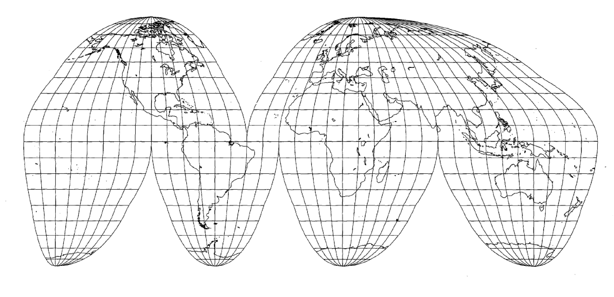
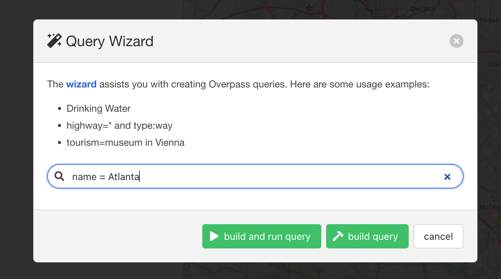

Class 7 Assignment: Map Projections
Fall 2025 | NINT5380 - CRN2189

Preamble
Map projections and datums are fundamental to the core framework of GIS systems. Both raster and vector data types can be displayed in GIS without projection information; however, it is only with correct map projections that any analysis between raster and vector layers can be conducted. In other words, anything beyond simple visibility within GIS requires associated map projection information for all analysis layers in a GIS project.
In this week’s assignment, both vector features and raster tiles will be procured online; as is the case with most data posted online, the attendant projection system will be a geographic coordinate system (GCS). Early processing in this assignment will utilize this GCS, but towards the end of the project, a map projection transformation will be performed in order to achieve a planar, projected coordinate system for areal calculations; and importantly preserves the actual shape of a city well as it is a Conformal map system.
This week’s assignment will draw on the primary concepts covered in Class 6 lecture & lab sessions:
- Overview of Map Projections
- Small Scale vs. Large Scale mapping techniques for Map Projections
- Project projections (project properties) vs. layer projection operations
- ‘On-the-fly’ transformation capacities in QGIS
- Measurements & Areal calculations based on CRS parameters
Specific techniques covered this week will include:
- Defining Projections
- Reprojections
- Datum Transformations
- Angular units vs. planar units
A synopsis of the technical steps of the assignment listed as follows:
- Acquire Vector boundary data for a global city of your choice. This feature will have an initial CRS
WGS84- geographic coordinate system. - Acquire a Raster tile that is consistent with your global city of choice. This raster will have an initial CRS
WGS84- geographic coordinate system. - Mask (clip) the raster to the global city boundary.
- Convert to Polygon vector format.
- Dissolve to land use categories; reproject the vector feature to its appropriate
UTM Zone- projected coordinate system. - Create an nominal thematic map and respective legend for land use categories.
- Incorporate a summary table into the final layout.
- Complete assignment submission layout; load to assignment 6 PDF at CANVAS.
Class 7 Recorded Lecture:
Before proceeding with assignment steps below, review the posted lecture slides + lecture recording for an overview of this week’s concepts and themes.
Class 7 Readings:
This week’s reading that will be featured on the upcoming quiz will be from Essentials of Geographic Information Systems textbook. There is a supplemental reading directory for your reference (Not featured on the quiz).
The Class 7 quiz will feature 10 questions covering content in the textbook Chapter 3 as noted below:
- Essentials of Geographic Information Systems textbook - Chapter 3, pages 54 - 58 (Coordinate Systems & Map Projections)
This week’s reading stops at Section 3.3 Map Abstraction.
Supplemental reading directory:
Included Supplemental Readings:
- Radical Cartography - Bill Rankin Projection Charts (folder of PDFs)
- Chapter 3 - Map Projections
- Choosing a projection
- Chapter 9 ‘what projection should I use’
- An Album of map projections - John P. Snyder

Data
The primary vector feature needed for this assignment will be derived by you from OpenStreetMap via Overpass Turbo. A secondary vector feature representing the UTM zones needed also for this assignment is linked as follows:

Note the .prj file which states the GCS for this feature: GEOGCS["GCS_WGS_1984",DATUM["D_WGS_1984",SPHEROID["WGS_1984",6378137,298.257223563]],PRIMEM["Greenwich",0],UNIT["Degree",0.017453292519943295]]
Assignment Step 1
Download the Class 7 assignment data
Create an assignment
.qgs, placing it within your assignment 6 directory.
Next, navigate via web browser to OpenStreetMap (OSM). In the assignment example below, the city of Atlanta, Georgia will be used. In your own assignment submission choose a global city that features the following characteristics:
- A very large city.
- Multiple land uses in addition to impervious, high urban surfaces.
- Falls within 1 UTM Zone.
Search for your city of choice in the upper-left search box at OSM:

OSM will return all results associated with your named city; make sure you are choosing the actual city:

Note the attribute name; in this case its simply Atlanta. Use the following code construction for the next step using Overpass Turbo:

name = Atlanta
Navigate to Overpass Turbo and insert your city search construction into the Query Wizard

The result should produce a vector polygon feature highlighted for the administrative boundary of your city; see example to follow for Atlanta, GA:
Make sure to position the bounding box (the map window) over the city as the code is searching within a bbox which translates as the bounding box, i.e. the map window.

At this juncture, Export the selection(s) for your city to the geojson format:

Note the .geojson file defaults to a GCS of WGS84:
“The coordinate reference system for all GeoJSON coordinates is a geographic coordinate reference system, using the World Geodetic System 1984 (WGS84) datum, with longitude and latitude units of decimal degrees.” reference
With the .geojson file downloaded and placed into your assignment folder, navigate to your .qgs. Next, import the .geojson file via the Data Source Manager in similar fashion to a .shp:
Its critical to disregard any polyline or points features, and just keep only the polygon feature. Once this is complete, Import the polygon feature to your .qgs project:
Once complete, also import the UTM Zones shapefile. There should be no errors reported at this juncture for projection issues. All data thus far is explicitly within the WGS84 coordinate system:
Label the UTM_zones shapefile (use attribute Zone for labeling) so that its evident where your city of choice falls within the UTM zones. Here its clear that Atlanta, GA falls fully within the UTM Zone 16N; since this is north of the equator, we use Zone 16N; if it were south of the equator we would use Zone 16S.
If by chance your chosen city falls across two UTM Zones, for this assignment, choose another city that falls within just one UTM Zone.
Video Guide I | Step I:
Assignment Step 2
We will be using the Copernicus Land Cover Raster Classification product which requires a login account. You can start that first here. Once situated as a login user, you can proceed to the product download.
Next, navigate to the Copernicus Global Land Cover- Land Cover 2019 (raster 100 m), global, yearly – version 3
Choose the
Download by areabutton; then chooseGo to download by area.
Go to download by areawill bring you to a map interface. At the left, make sure that you have the 2019 100m product checked. Also ensure you have checked onDiscrete Classification. You will see a small green download icon. Enact that icon.

At this juncture, you will have several choices to choose your area. You can draw a rectangle; you can pick via country. Either will work fine. The smaller the area, the quicker the product will queue and deliver. BUT you need to make sure that you have more raster coverage than your chosen urban area boundary in order to mask the land cover product correctly. Don’t go too small if you use a custom rectangle size; and again, not too large so as to create unnecessary file size that is difficult to download and load to QGIS.
Add your selection to the cart after enacting the Download Icon. Once complete, you should see the following product in your cart. Note that we’ll use the default
EPSG: 4326 CRS:
Once the order is set by clicking the left check box to Process download request, an email will be generated to your email account that will have a link to the compressed data in .zip format.
Assignment Step 3
- Next, uncompress the raster classification data to your assignment directory; then import the land cover raster to QGIS. Mask by Layer the raster with the vector layer so that the full coverage raster tile is ‘clipped’ to the edge of the vector city feature. Going forward, this will be the input raster for initial processing steps below:

If you receive error Cutline polygon is invalid repair the polygon feature via the Fix geometries tool located within the Processing Toolbox.
Once the administrative polygon (Atlanta, GA as example) is deemed valid by QGIS, move along to step 4 to follow. Utilize the fixed polygon going forward.
Assignment Step 4
As discussed earlier, utilize the UTM Zones feature to determine which zone encapsulates to full extent of your global city. If by chance your city straddles two UTM Zones, you are advised for this assignment to simply choose a different global city that indeed falls fully within one UTM Zone. As noted prior, the relevant UTM zone for Atlanta, Georgia is UTM Zone 16N. Reproject this vector feature and output to the assignment folder using the correct UTM Zone for your city:

.shp to assignment folder and shown in TOCNote the resulting projected vector polygon feature can reside within the larger project CRS which is still WGS84 at this juncture. This is the result of the ‘on-the-fly’ projection capacity of QGIS whereby layers with different .prj can exist in the same project.
Assignment Step 5
Next, Polygonize the raster cells within the new clipped raster for your city.
If .dbf errors are evident, the dissolve should still be valid.
DN number produced for each polygonized raster cell- Dissolve the new polygon feature, utilizing the attribute
DNas the dissolve field:
DN value is selected for the `Dissolve field(s)If you receive error "Vectorized" has invalid geometry repair the polygon feature via the Fix geometries tool located within the Processing Toolbox, and rerun the Dissolve process.
As the Dissolve process is completed, the resulting attribute table in the new vector feature should have just those cell zones within the administrative boundary. In the example, Atlanta, GA has a total of 12 land cover classes:
DN columnVideo Guide II | Steps II - V:
Note: In the video guide, a previous web interace was available for the input raster classification data. However, this is no longer available; the replacement steps are noted above in Assignment Step 2.
Assignment Step 6
- Once the Dissolve is complete, Reproject the new Dissolve vector layer to its correct UTM Zone, followed by an export to the assignment folder:
Assignment Step 7
Utilize the Field Calculator to create 2 new columns within the new vectorized land cover feature resulting from Step 6 above:
Classas a text column; enter default value as'test'and set the output field length to60% Landas a Decimal number (real) column; enter default value of0
Next, Add Geometry Attributes to the attribute table importantly using the Layer CRS which in this case is NOT WGS84 but rather UTM Zone 16N which reports back square meters:
Note this is an automated approach to geometry attributes; in past assignments we have used the Field Calculator to create a column of areal units/dimensions. In this instance, we use a built-in default processing tool to do this for us.
Add Geometry Attributes tool pathAdd Geometry Attributes toolAdd Geometry Attributes tool result column area- Next, create summary statistics for
areacolumn; in the assignment example for Atlanta, GA the result is348850616.1164551square meters:
AREA column via Processing ToolboxRun the Basic Statistics for Fields tool with parameters for the area column:
SUM valueNext, within the attribute table at column % Land, derive the percentage of land per discrete DN value utilizing the following formula. Replace the Atlanta, GA square area value with the unique value for your own city land cover:
- Formula:
("area" /348850616.1164551)*100% Land calculation based on total square area of land cover as the denominatorNext, Toggle ON an editing session within the attribute table; and point cursor to the Class column. With the editing session active, populate the Class column with the correct, respective Land Cover Class per each DN value. For instance, DN value 114 should be Class Deciduous broadleaf closed forest. Move along until all records have been updated to their respective land cover types.
Utilize the Assignment Step 7 legend reference table below for the correct DN to Class pairings.
Class valuesClass value for second record in the attribute tableWith all classes complete with corresponding DN values, you will incorporate the output table into the final cartographic layout (use the same process as Assignment 5).
If you would like to add an additional column for total land, unit square miles (as seen in the example map), you will need to create another column using the multiplication factor for converting square meters to square miles: m² * 0.00000038610
Assignment Step 7
Before proceeding, save the current .qgs. Open a new, blank .qgs and import just the adminstrative boundary feature and the vectorized land use with your attribute table work complete. Make sure that the new .qgs project snaps NOT TO WGS84, But rather your correct UTM Zone.
It is critical that your final layout work is completed in the respective projected UTM Zone as you want a much better shape representation with correct planar calculations which replace the default WGS84 geographic coordinate system.
- Proceed to the final map layout. Here you will also create a legend with the following nominal categories
Land Coverwhich will be used in lieu of theDNcolumn:
| DN | Land Cover Category |
|---|---|
| 0 | unknown |
| 111 | Evergreen needleleaf closed forest |
| 112 | Evergreen broadleaf closed forest |
| 113 | Deciduous needleleaf closed forest |
| 114 | Deciduous broadleaf closed forest |
| 115 | mixed closed forest |
| 116 | unknown closed forest |
| 121 | Evergreen needleleaf open forest |
| 122 | Evergreen broadleaf open forest |
| 123 | Deciduous needleleaf open forest |
| 124 | Deciduous broadleaf open forest |
| 125 | mixed open forest |
| 126 | unknown open forest |
| 20 | shrubland |
| 30 | herbaceous vegetation |
| 40 | cropland |
| 50 | built-up |
| 60 | bare sparse vegetation |
| 70 | snow ice |
| 80 | permanent inland water |
| 90 | herbaceous wetland |
| 100 | moss lichen |
| 200 | sea |
Copernicus Global Land Service: Land Cover 100m: version 3 Globe 2015-2019: Product User Manual

Only use the land cover categories that are included in your final chosen city extent. Those that are not within your city extent, simply don’t include those in the final legend. As you replicate the class colors for the legend, try to keep consistent with the 23 Class Legend colors, i.e. your Built-up value should be a bright red; your Shrubland value should be a neutral yellow-orange, ect.
- Refer to Map Layout & Deliverable below for other cartographic details.
Map layout & Deliverable:
To development the final map design, utilize the map example PDF below to help guide your process.
Final map layout will include the following elements on either a 11x17” or 8.5x11” Portrait/Landscape 300 DPI:
- Main map frame featuring your cartographic output
- Insert summary table
- A map title
- Legend representing each nominal land cover category within your chosen city.
- Simple scale bar tailored to a meaningful distance(s) across chosen city.
- North Arrow
- Data source & Author tag
To incorporate the summary table with the % of each land cover category for your city (Assignment Step 7 above), use the extra credit section of assignment 5 as a guide. Start towards the end of the extra credit section wherein Add Attribute Table to map layout is detailed.

Utilize the following map example to guide your design process:
Further References:
Guide for working with Map Projections in QGIS REFERENCE GUIDE
The IOGP’s EPSG Geodetic Parameter Dataset is a collection of definitions of coordinate reference systems and coordinate transformations which may be global, regional, national or local in application.
Interesting Article on the Dymaxion Map Projection: Reinterpreting Bucky Fuller’s Dymaxion Map